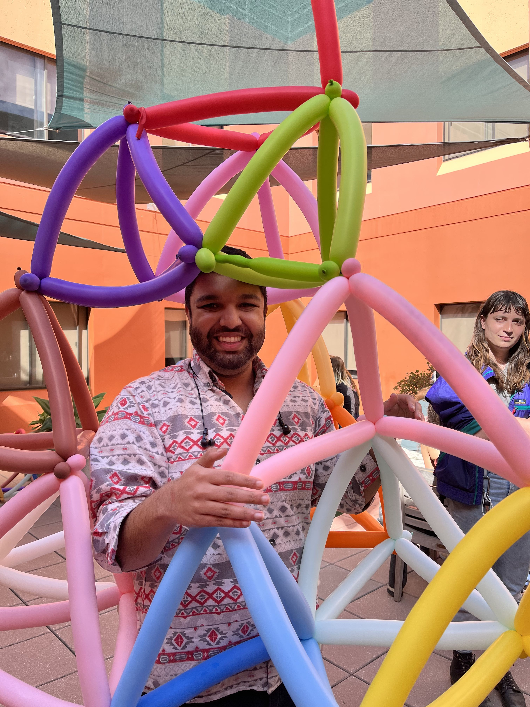

Irit Huq-Kuruvilla
Academia Sinica
I am a mathematician, currently employed as a postdoc at Academia Sinica.
Research Interests
My research focuses on enumerative algebraic geometry, and its intersection with mathematical physics. I am particularly interested in quantum K-theory and related topics, including connections to quantum field theory, representation theory, and integrable systems.